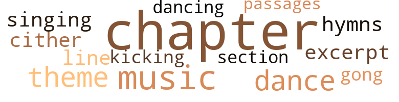
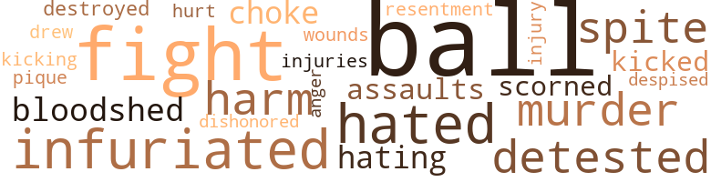

Of Human Kindness, by Johnson, Eugene D. (1975)
28 music-related terms matched in this text.
Most frequent terms in this topic: chapter (11); music (3); dance (2); theme (2); passages (1)
chapter.n.01
Definition: a subdivision of a written work; usually numbered and titled
| word | sentence |
|---|---|
| chapter | " The thirteenth chapter of First Corinthians . " |
| chapter | " I told you I was concentrating after reading the thirteenth chapter of First Corinthians . |
| chapter | " The third verse of the second chapter of Philippians says . . . but in lowliness of mind let each esteem other better than themselves . ' |
| chapter | After breakfast , she attended morning 's service at her church and was greatly thrilled to hear Reverend Rawlings base his sermon on the thirteenth chapter of First Corinthians . |
| chapter | Iler urgent desire to serve the needy was spurred by his counseling that this chapter be practiced as the best example of everyday Christian living . |
| chapter | As she again joyously recollected many occasions her mother had read and explained this chapter to her , she manifested it by joining her fellow-worshippers in shouting , " Amen ! " and " Preach the word ! " |
| chapter | To dispel her dejected and abused sensibility , she took her Bible off the end table and again turned to the fourteenth chapter of Saint John ; beginning at the first verse , she read : " Let not your heart be troubled : you believe in God , believe also in me . |
| chapter | To soothe her depressed emotion , she opened the Bible , turned to the fourteenth chapter of Saint John and began reading about Christ comforting his weary followers through counseling them not to let their hearts be troubled . |
| chapter | Polly Lou paused a moment and concentrated ; then , while Jonas waited for her to speak , opened her Bible , turned to the twelfth chapter of Saint Mark and read the last four verses . |
| chapter | Slowly , she began turning pages until she came to the thirteenth chapter of First Corinthians : " Though I speak with the tongues of angels , and have not charity . . . " She read through to the last verse : " And now abideth faith , hope and charity , these three ; but the greatest of these is . . . " After recollecting several moments , she thought , " These are the most inspiring Bible verses I ever read . " |
| chapter | She was determined to repeat until she could recite the whole chapter without missing any words . |
dance.v.03
Definition: skip, leap, or move up and down or sideways
| word | sentence |
|---|---|
| dancing | Despite the sign over the juke box , prohibiting dancing any time , several couples were twisting and gliding over the polished floor . |
| dance | If you have to , ask some of them to dance with you . " |
| dance | " They know it , but do n't expect them to ask you to dance when they see you sitting here almost asleep . " |
excerpt.n.01
Definition: a passage selected from a larger work
| word | sentence |
|---|---|
| excerpt | " It 's because too many people , exactly like you , reject the Biblical excerpt that teaches us to love our neighbors as we do ourselves . |
gong.n.01
Definition: a percussion instrument consisting of a metal plate that is struck with a softheaded drumstick
| word | sentence |
|---|---|
| gong | I feel like ' kicking the gong around . ' " |
hymn.n.01
Definition: a song of praise (to God or to a saint or to a nation)
| word | sentence |
|---|---|
| hymns | Polly Lou hummed a few words from one of her favorite hymns . |
kick.v.04
Definition: kick a leg up
| word | sentence |
|---|---|
| kicking | I feel like ' kicking the gong around . ' " |
music.n.01
Definition: an artistic form of auditory communication incorporating instrumental or vocal tones in a structured and continuous manner
| word | sentence |
|---|---|
| music | Sounds of tinkling glasses and juke box music blended with chattering voices of customers . |
| music | " I want to hear more music , " Shelby said . |
| music | " I like music , too . " |
passage.n.06
Definition: a short section of a musical composition
| word | sentence |
|---|---|
| passages | She turned further and read Apostle Paul 's message to the Corinthians : " And now abideth faith , hope and charity ... but the greatest of these is ... She remembered that she 'd often heard her mother reciting those passages of Scripture . |
section.n.01
Definition: a self-contained part of a larger composition (written or musical)
| word | sentence |
|---|---|
| section | To soothe her downheartedness , she entered the local public library , selected several religious publications from the magazine rack , and sat at a table in the reading section . |
singing.n.01
Definition: the act of singing vocal music
| word | sentence |
|---|---|
| singing | When I want to hear preaching and singing , I get a religious program on my TV . |
theme.n.03
Definition: (music) melodic subject of a musical composition
| word | sentence |
|---|---|
| theme | The theme of their conversation was that charity should begin at home , and thereafter be extended to those who mostly deserve it . |
| theme | She remained in the library until closing time , then attended a local theatre that featured a movie with a religious theme . |
tune.n.01
Definition: a succession of notes forming a distinctive sequence
| word | sentence |
|---|---|
| line | " Amusing folks is not my line . |
zither.n.01
Definition: a musical stringed instrument with strings stretched over a flat sounding board; it is laid flat and played with a plectrum and with fingers
| word | sentence |
|---|---|
| cither | Customarily , the dusty streets of East Harlem were littered with rubbish as Polly Lou walked along One Hundred and Twenty-sixth Street , arrogantly wondering how long ago a street sprinkler or sweeper had passed through ; and how much time would elapse before cither would pass . |
43 violence-related terms matched in this text.
Most frequent terms in this topic: ball (6); fight (4); balls (3); harm (2); spite (2)
anger.n.01
Definition: a strong emotion; a feeling that is oriented toward some real or supposed grievance
| word | sentence |
|---|---|
| anger | " I 'm trying , but - " " The Bible ( Proverbs 16:32 ) says , ' He that is slow to anger is better than the mighty ; and he that rules his spirit than he that takes a city . ' |
bloodshed.n.01
Definition: the shedding of blood resulting in murder
| word | sentence |
|---|---|
| bloodshed | It means bloodshed , but I suppose it could be bloodless . " |
contemn.v.01
Definition: look down on with disdain
| word | sentence |
|---|---|
| scorned | " No , but if you expect me to break my promise , you 're terribly mistaken and should be pitied more than scorned . |
| despised | " I despised it . " |
destroy.v.04
Definition: put (an animal) to death
| word | sentence |
|---|---|
| destroyed | Dinah , astonished and infuriated when she saw the bruised shin and destroyed doll , immediately demanded Jenny Lea to apologize and promise not to do it again . |
draw.v.23
Definition: pull (a person) apart with four horses tied to his extremities, so as to execute him
| word | sentence |
|---|---|
| drew | Polly Lou dashed to her sister 's bedside , drew up a chair and sat down ; then grasped the patient 's outstretched hand and tenderly kissed her bandaged forehead . |
fight.n.05
Definition: a boxing or wrestling match
| word | sentence |
|---|---|
| fight | " Why do n't you two fight it out in Madison Square Garden ? " she drawled jokingly . |
fight.v.02
Definition: fight against or resist strongly
| word | sentence |
|---|---|
| fight | " I feel ready to fight . " |
| fight | " I must fight the only way I 'm familiar with . " |
| fight | I 'm just beginning to fight for what I believe . |
gag.v.06
Definition: cause to retch or choke
| word | sentence |
|---|---|
| choke | You 're complaining , but there 's not even enough in here to choke my canary . " |
harm.v.01
Definition: cause or do harm to
| word | sentence |
|---|---|
| harm | " Believe me , I would n't harm you . " |
hate.v.01
Definition: dislike intensely; feel antipathy or aversion towards
| word | sentence |
|---|---|
| hated | " No , but I heard that purges are performed upon innocent men and women who 're hated by their fellow men . " |
| hated | " Some folks ought to be hated . " |
| hating | " I ca n't imagine anybody - not even you - hating me ! " |
| detested | Jenny Lea insisted on annoying Polly Lou any way she could ; she puffed rapidly on the remainder of her Lucky Strike and knew how greatly her sister detested cigarette smoke . |
| detested | Jenny Lea detested the thought that if they rejected Shelby 's invitation , he 'd approach other unescorted women . |
infuriate.v.01
Definition: make furious
| word | sentence |
|---|---|
| Infuriated | Infuriated by Polly Lou 's candid assertion and unable to offer a logical contradiction , she aimed to console herself by smoking . |
| infuriated | Dinah , astonished and infuriated when she saw the bruised shin and destroyed doll , immediately demanded Jenny Lea to apologize and promise not to do it again . |
injury.n.01
Definition: any physical damage to the body caused by violence or accident or fracture etc.
| word | sentence |
|---|---|
| harm | " There 's no harm in repeating . |
| injuries | Shelby suffered a broken nose and internal injuries . |
| injury | " If you must know , she said serious internal injury made his case hopeless . |
kick.v.04
Definition: kick a leg up
| word | sentence |
|---|---|
| kicking | I feel like ' kicking the gong around . ' " |
kick_back.v.02
Definition: spring back, as from a forceful thrust
| word | sentence |
|---|---|
| kicked | While they were loudly quarreling over the ownership of a doll , which really belonged to Polly Lou , Jenny Lea furiously kicked Polly Lou 's shin , grabbed the doll and ripped it apart . |
malice.n.01
Definition: feeling a need to see others suffer
| word | sentence |
|---|---|
| spite | You 're shaken up and bandaged in this hospital because you wanted to spite your sister , and for no sensible reason . ' |
| spite | Sympathy , consideration and logical reasoning were Polly Lou 's dominant characteristic traits ; Jenny Lea 's behavior was inspired by spite , selfishness and as Polly Lou was constantly telling her , just plain nonsense . |
murder.n.01
Definition: unlawful premeditated killing of a human being by a human being
| word | sentence |
|---|---|
| murders | With all the churches we have , why are there so many murders , rapes , robberies , muggings , assaults and - ? " |
| murder | " Sometimes meddling is the cause of murder . " |
musket_ball.n.01
Definition: a solid projectile that is shot by a musket
| word | sentence |
|---|---|
| balls | The boys were amusing themselves by throwing soft balls against the building and catching them on the bounce . |
| balls | Jenny Lea remembered her childhood and the fun she had by skipping ropes and bouncing balls on sidewalks in Harlem , but she believed those children should 've been occupied with something more useful and constructive , although she could n't say precisely what would 've been more useful and constructive . |
| ball | As one boy threw his ball , she clumsily stepped within range of the throw ; the ball struck her forehead and bounced off . |
| ball | As one boy threw his ball , she clumsily stepped within range of the throw ; the ball struck her forehead and bounced off . |
| balls | " And the little boys , they were throwing balls , and - " " That 's good recreation for them . " |
| ball | " With the ball ? " |
| ball | " Why do n't you look where you 're throwing that ball ? " she blurted . |
| ball | " The boy was playing with the ball . |
| ball | " A brat hit me with a ball , a tramp came near walking over me , and you want me to be tolerant ? " |
pain.v.02
Definition: cause emotional anguish or make miserable
| word | sentence |
|---|---|
| hurt | The truth is n't going to hurt me . |
pique.v.01
Definition: cause to feel resentment or indignation
| word | sentence |
|---|---|
| pique | While lying in bed reminiscing , she became aware that her accident and confinement was the unquestionable result of her effort to pique Polly Lou during her most frustrated moments . |
rape.n.03
Definition: the crime of forcing a woman to submit to sexual intercourse against her will
| word | sentence |
|---|---|
| assaults | With all the churches we have , why are there so many murders , rapes , robberies , muggings , assaults and - ? " |
rape.v.01
Definition: force (someone) to have sex against their will
| word | sentence |
|---|---|
| dishonored | " Sure , I remember , but I 've dishonored it . |
resentment.n.01
Definition: a feeling of deep and bitter anger and ill-will
| word | sentence |
|---|---|
| resentment | After her reminiscing ended , she realized that , at fifty , her resentment of them was stronger and more apparent than ever . |
wound.n.01
Definition: an injury to living tissue (especially an injury involving a cut or break in the skin)
| word | sentence |
|---|---|
| wounds | Jenny Lea 's wounds were bandaged in the treatment room ; then she was given a sedative and ordered to bed . |
100 religion-related terms matched in this text.
Most frequent terms in this topic: church (27); faith (9); Church (8); religion (5); sermon (5)
apostle.n.03
Definition: (New Testament) one of the original 12 disciples chosen by Christ to preach his gospel
| word | sentence |
|---|---|
| Apostle | She turned further and read Apostle Paul 's message to the Corinthians : " And now abideth faith , hope and charity ... but the greatest of these is ... She remembered that she 'd often heard her mother reciting those passages of Scripture . |
baptize.v.01
Definition: administer baptism to
| word | sentence |
|---|---|
| christened | " You and I , when we were only a few weeks old , were christened in Good Samaritan . " |
blessing.n.05
Definition: the act of praying for divine protection
| word | sentence |
|---|---|
| blessings | And some people are so busy talking about their troubles that they do n't take time to count their blessings . " |
| blessing | They sat at opposite sides of the table , bowed their heads , and Polly Lou offered thanks for the blessing . |
christian.n.01
Definition: a religious person who believes Jesus is the Christ and who is a member of a Christian denomination
| word | sentence |
|---|---|
| Christians | " He says the Gospel is free , but Christians must pay for the piping . ' " |
| Christian | " I 'm proud to be a Christian , " Polly Lou said , " and I 'm not going to deny my faith simply to please you . " |
| Christian | I hope it never happens ; but if it does , I might , for the moment , forget I 'm a Christian . " |
| Christians | As Christians , we 're never entirely without problems to solve . " |
church.n.02
Definition: a place for public (especially Christian) worship
| word | sentence |
|---|---|
| church | I 'm - " " You should go to church sometime . " |
| church | I go to church to worship God , and certainly not to look for hypocrites in our ' amen corner . ' " |
| churches | " Honestly , I do n't see any good the churches are doing . |
| churches | With all the churches we have , why are there so many murders , rapes , robberies , muggings , assaults and - ? " |
| church | " They 're your church folks . " |
| church | " Even when I 'm not accusing , you know I do n't get along very well with church folks . " |
| church | " Even if you 're as poor as a church mouse , it does n't stop you from being friendly with your neighbors . |
| church | He constantly reminded Dinah that Polly Lou and Jenny Lea had much to gain by regularly attending public school , Sunday school and church . |
| church | " This is n't a church , " Jenny Lea said . |
| church | To overcome her depressed feeling , she decided to postpone fixing breakfast until she 'd given her apartment a thorough cleaning before going to church . |
| church | After breakfast , she attended morning 's service at her church and was greatly thrilled to hear Reverend Rawlings base his sermon on the thirteenth chapter of First Corinthians . |
| church | Although Shem was n't a member of Polly Lou 's church ( or any other ) , they had been acquainted more than fifteen years . |
| church | Polly Lou arrived at the white stucco , side street church and , before entering the auditorium , paused instantly to be certain as to precisely what her visit involved . |
| church | " The work we propose to do will be a memorial to our deceased ( but still beloved ) mother and father who were faithful members of this church . |
| church | Since I 'm a member of this church , I 'm not asking too much when I suggest that this auditorium be available for my free child care service . " |
| church | " The constitution of this church . " |
| church | " I admire them for their spirit , but - " " So , you see , as pastor of this church , I feel obligated to observe fundamental principles adopted by the founders . " |
| church | " After all you 've done for the church , how could he ? " |
| church | " Well , of all church laws , this is the worst I ever heard of . |
| church | The little side-street church was stuffy . |
| church | " Were not in church , " Jenny Lea said . |
church.n.04
Definition: the body of people who attend or belong to a particular local church
| word | sentence |
|---|---|
| church | " During our church meetings . " |
| churches | " Literally speaking , the Gospel is free , " Folly Lou said , " but Christian churches arc supported by cash contributions from members . |
| church | No Christian church , large or small , can thrive unless somebody passes the collection tray . " |
| churches | After Polly Lou had listened attentively , she replied , " Our crime wave is n't because we have too many churches . " |
| Church | " Does Good Samaritan Baptist Church have a good reason for existing ? " |
| Church | Her attack would be an open indictment of every member of Good Samaritan Baptist Church , including Reverend Jasper Rawlings , the bald , paunchy , coffee-colored religious leader . |
| Church | Church folks vex me . " |
| Church | " If we 're kind to everybody , then - " As Jenny Lea recalled that Dinah often had discussed with her and Polly Lou their christening by Reverend Rawlings in Good Samaritan Baptist Church , she was pleased to acknowledge that she was a backslider who had n't attended religious service there or at any other church since her thirtieth birthday . |
| church | " If we 're kind to everybody , then - " As Jenny Lea recalled that Dinah often had discussed with her and Polly Lou their christening by Reverend Rawlings in Good Samaritan Baptist Church , she was pleased to acknowledge that she was a backslider who had n't attended religious service there or at any other church since her thirtieth birthday . |
| Church | Dinah did n't have much formal education , but she was known among her neighbors as a God-fearing woman and faithful member of Good Samaritan Baptist Church . |
| Church | Deceased Roland Rutherford also had very little formal education ; but he was a devoted husband and father , loved by his family , respected by his neighbors and , for ten years before his untimely death , was a deacon of Good Samaritan Baptist Church . |
| church | She clearly recollected that , even before she retired from nursing at Harlem Hospital , she taught Sunday school and assisted her church 's environment committee in arranging and promoting religious concerts and recreational events for boys and girls . |
| Church | After attending morning 's service in Good Samaritan Baptist Church , she was homeward bound to keep her appointment with Jenny Lea , also a childless widow . |
| church | " To use the church 's auditorium . " |
| Church | Reverend Jasper Rawlings , pastor of the First Baptist Church of The Good Samaritan , was short and stout , middle-aged and extremely pot-bellied . |
| church | " He says he likes my idea , personally , but child care service in the auditorium violates the church 's charter . " |
| church | " The church 's what , did you say ? " |
| church | " We are n't allowed to rewrite the church 's charter , so the auditorium is entirely out of our plan . |
cleric.n.01
Definition: a clergyman or other person in religious orders
| word | sentence |
|---|---|
| churchman | " My husband was a churchman , and - " " So was mine . " |
confession.n.05
Definition: the document that spells out the belief system of a given church (especially the Reformation churches of the 16th century)
| word | sentence |
|---|---|
| confession | " Your confession is very rejoicing to me , darling . |
| confession | " That 's what I call an honest confession , " Polly Lou said while appreciating her sister 's belated promise to support he free child care plan , " and it 'll purge your conscience , " Do you know why I 've been such a nitwit ? " |
curate.n.01
Definition: a person authorized to conduct religious worship
| word | sentence |
|---|---|
| pastor | " I 'm going to speak to my pastor . " |
| pastor | On a Wednesday afternoon before leaving home to visit her pastor , Polly Lou stood before the mirror in her bedroom and carefully checked her personal appearance . |
| pastor | Reverend Jasper Rawlings , pastor of the First Baptist Church of The Good Samaritan , was short and stout , middle-aged and extremely pot-bellied . |
| pastor | " I admire them for their spirit , but - " " So , you see , as pastor of this church , I feel obligated to observe fundamental principles adopted by the founders . " |
god.n.03
Definition: a man of such superior qualities that he seems like a deity to other people
| word | sentence |
|---|---|
| God | As she meditated the successful outcome of her problem , she was thinking , " If God is on my side , who can be against me ? " |
| God | " I am that I am , and nothing more , " Polly Lou added as she remembered reading in Exodus what God said to Moses after designating him to lead the Israelites out of Egyptian bondage . |
| God | " I thank God you 're able to talk to me . " |
| God | Only God can truthfully answer your question . " |
| God | While passing another " hot spot , " she heard male and female voices whooping and shouting inside , plus the ear-splitting tone of a juke box playing " All Of God 's Children Got Shoes " in swing time . |
hell.n.01
Definition: any place of pain and turmoil
| word | sentence |
|---|---|
| hell | " Get the hell off the street ! " |
hymn.n.01
Definition: a song of praise (to God or to a saint or to a nation)
| word | sentence |
|---|---|
| hymns | Polly Lou hummed a few words from one of her favorite hymns . |
jesus.n.01
Definition: a teacher and prophet born in Bethlehem and active in Nazareth; his life and sermons form the basis for Christianity (circa 4 BC - AD 29)
| word | sentence |
|---|---|
| Jesus | " Jesus Christ of Nazareth ! " |
jew.n.01
Definition: a person belonging to the worldwide group claiming descent from Jacob (or converted to it) and connected by cultural or religious ties
| word | sentence |
|---|---|
| Israelites | " I am that I am , and nothing more , " Polly Lou added as she remembered reading in Exodus what God said to Moses after designating him to lead the Israelites out of Egyptian bondage . |
messiah.n.01
Definition: any expected deliverer
| word | sentence |
|---|---|
| Christ | " Jesus Christ of Nazareth ! " |
| Christ | " Those verses we used to read about Christ healing sick folks without medicine , making the blind see , the lame walk , raising the dead , and - " After Polly Lou had listened intensely , she eased herself out of the upholstered chair by the window and again sat on the sofa , much closer to her doubting sister . |
| Christ | " Did Christ really use medicine ? " |
| Christ | " Some people do n't see anything good accomplished even by Christ . |
| Christ | To soothe her depressed emotion , she opened the Bible , turned to the fourteenth chapter of Saint John and began reading about Christ comforting his weary followers through counseling them not to let their hearts be troubled . |
prayer.n.01
Definition: the act of communicating with a deity (especially as a petition or in adoration or contrition or thanksgiving)
| word | sentence |
|---|---|
| prayer | " You 're supposing , but I - " " At our next meeting , I 'll ask Reverend Rawlings to lead us in a few moments of silent prayer . . . . " " Not for me ! " |
| prayer | Or I might oiler a solo prayer - and it wo n't be silent - if I decide that 'll be better . " |
| Prayer | " Prayer will help you when everything else fails . |
| prayers | She shuddered as she remembered that Dinah forced her to say her prayers every night before she went to bed ; forced her to share candy and cookies with other children , and to attend Sunday school regularly . |
religion.n.01
Definition: a strong belief in a supernatural power or powers that control human destiny
| word | sentence |
|---|---|
| religion | " Most of our members , I believe , are practicing religion as well as advocating it . |
| religion | " Why re you giving me this lecture about religion ? " |
| faith | " I 'm proud to be a Christian , " Polly Lou said , " and I 'm not going to deny my faith simply to please you . " |
| religion | " Say you 're changing your mind about religion . " |
| religion | " I do n't care how much religion you have , you need money . . . " " For what ? " |
| faith | " Those who have faith in God , everything they need will be provided for them . " |
| faith | " That 's because you do n't have faith . " |
| faith | The Lord has ordained that problems shall arise in our lives to test our faith in Him . |
| faith | " I have faith . " |
| faith | " I do n't have much faith in something I ca n't see . " |
| faith | If I have faith in Him , there 's no end to what I can do . |
| religion | You got too much religion , and you 're always dreaming up phony ideas . " |
| faith | She turned further and read Apostle Paul 's message to the Corinthians : " And now abideth faith , hope and charity ... but the greatest of these is ... She remembered that she 'd often heard her mother reciting those passages of Scripture . |
| faith | Slowly , she began turning pages until she came to the thirteenth chapter of First Corinthians : " Though I speak with the tongues of angels , and have not charity . . . " She read through to the last verse : " And now abideth faith , hope and charity , these three ; but the greatest of these is . . . " After recollecting several moments , she thought , " These are the most inspiring Bible verses I ever read . " |
saint.n.02
Definition: person of exceptional holiness
| word | sentence |
|---|---|
| Saint | To dispel her dejected and abused sensibility , she took her Bible off the end table and again turned to the fourteenth chapter of Saint John ; beginning at the first verse , she read : " Let not your heart be troubled : you believe in God , believe also in me . |
| Saint | Hot as it is , I would n't like walking from Saint Nicholas Avenue over here and find you out . " |
| Saint | To soothe her depressed emotion , she opened the Bible , turned to the fourteenth chapter of Saint John and began reading about Christ comforting his weary followers through counseling them not to let their hearts be troubled . |
| Saint | Polly Lou paused a moment and concentrated ; then , while Jonas waited for her to speak , opened her Bible , turned to the twelfth chapter of Saint Mark and read the last four verses . |
| angels | Slowly , she began turning pages until she came to the thirteenth chapter of First Corinthians : " Though I speak with the tongues of angels , and have not charity . . . " She read through to the last verse : " And now abideth faith , hope and charity , these three ; but the greatest of these is . . . " After recollecting several moments , she thought , " These are the most inspiring Bible verses I ever read . " |
satan.n.01
Definition: (Judeo-Christian and Islamic religions) chief spirit of evil and adversary of God; tempter of mankind; master of Hell
| word | sentence |
|---|---|
| devil | " But I suppose the devil and high water wo n't stop you . " |
sermon.n.02
Definition: a moralistic rebuke
| word | sentence |
|---|---|
| sermon | " But I do n't want to hear a sermon after that . " |
| sermons | That 's what I like about TV sermons . " |
| sermon | After breakfast , she attended morning 's service at her church and was greatly thrilled to hear Reverend Rawlings base his sermon on the thirteenth chapter of First Corinthians . |
| sermon | The portly reverend was sitting in his study room , wearing metal-framed eyeglasses and reading his Bible in preparation for the sermon he was scheduled to preach the forthcoming Sunday . |
| sermon | Reverend Rawlings preached a fund raising sermon . |
| sermon | I think it was the most exhorting sermon I ever heard him preach . " |
worship.n.01
Definition: the activity of worshipping
| word | sentence |
|---|---|
| worship | I go to church to worship God , and certainly not to look for hypocrites in our ' amen corner . ' " |
| worship | " We should n't worship it . " |